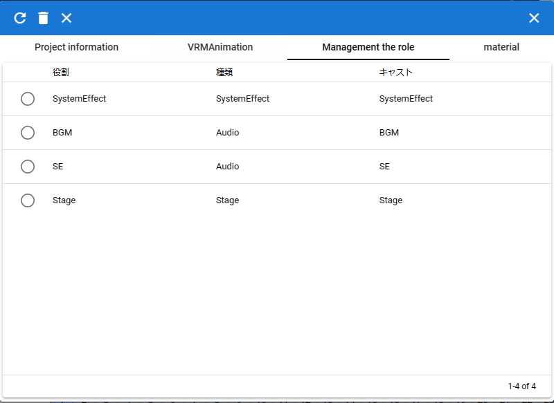
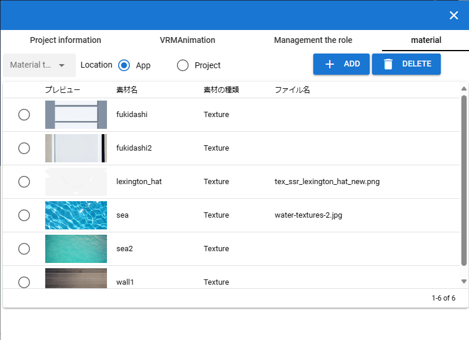
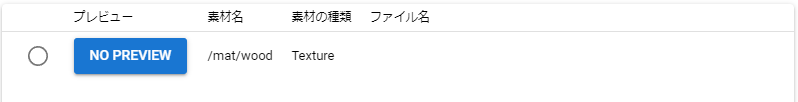
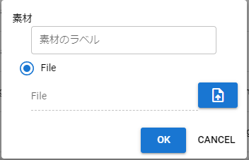

6.5. Project setting screen
This screen is used to set the role name of each object in the animation and to assign each object to the loaded role. (Animation will be discussed later)
6.5.1. Project information
This is a tab where you can make a note of the outline of the project file.

- Name:
Animation project name
- Description:
Detailed description of the animation project
- URL:
URL you want to specify
- license:
Animation project license terms (if needed)
- FPS:
Sets the animation FPS.
- default duration:
Specifies the number of seconds between frames in the current animation project. By default, the calculation result of
FPS / 6000.0is set.- Recalculate:
After setting the default spacing, press to recalculate the spacing of all keyframes.
6.5.2. Role management
This tab is used to select and manage roles (roles/timelines) within an animation project and casts (objects) assigned to them.
- Role:
Enter the role of the object (name for identification within the animation project)
- Kind:
role type
- cast:
Select objects to assign to role
6.5.3. material
This tab manages materials such as textures in the app.
- Material type:
Select from Texture etc.
- material location:
Switch between in-app or in-project
App- in the appProject- in the current animation project- Add:
add material
- Remove:
Delete the material selected in the list
- List:
Material preview, material name, material type, file name
Note
Rows with no images loaded in the list look like this:
Press the No Preview button to load the image.
6.5.3.1. Add material
This is a dedicated pop-up window for adding materials.
- material label:
Specifies the name used to refer to the texture in the application
- material file button:
Select the image file etc. you want to use as a texture from the terminal